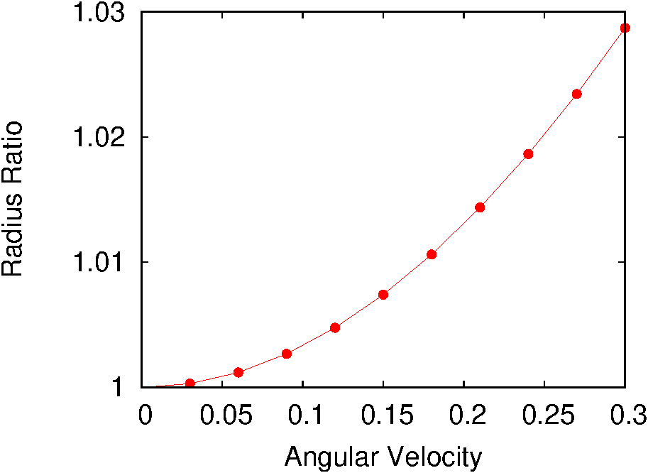

1 はじめに
回転する液滴の平衡形状は、古くはPlateauの一連の実験から始められた。 Plateauは水の中に油滴を閉じ込め、容器全体を回転させることでその形状や 不安定性を調べた。それ以来、液体金属の物性を調べたり、振動モードから 界面張力を測定したりするのに液滴表面形状の研究が行われている。 Plateauの実験は1863年のものだが、近年になって 液滴を浮遊させたまま回転させることができるようになったため[2]、 回転液滴の物理はまた興味をもたれているようである。 そこで、本稿では主にChandrasekharの導出に基づいて回転液滴の平衡形状を求める[1]。
2 圧力と表面形状
無重力下で角速度\(\omega\)にて回転している液滴を考える。回転軸を\(z\)軸とし、液滴中心を原点とする。 以下、簡単のために液滴外部の圧力を0とする。 液滴内部の局所圧力を\(p\)とすると、局所的な運動方程式は \[\rho \frac{\mathrm dv_\alpha}{\mathrm dt} = - \frac{\partial p}{\partial x_\alpha} \qquad (\alpha \in {x,y,z})\] と書くことができる。 回転液滴が定常状態に達すると、界面張力による圧力勾配と遠心力が釣り合うはずである。 回転軸からの距離を\(r\)とすると、 \[\rho \omega^2 r = \frac{\mathrm dp}{\mathrm dr}\] であるから、定常状態における圧力は \[p(r) = p_0 + \frac{1}{2} \rho \omega^2 r^2\] である。ただし\(p_0\)は液滴中心\((r=0)\)における圧力である。 さて、液滴表面の法線ベクトルを\({\bf n}\)とすると、液滴表面上において圧力と法線ベクトルには以下の関係が成り立つ。 \[p = \gamma \mathrm{div} {\bf n}\] ただし\(\gamma\)は界面張力である。 以上から、液滴表面上においては圧力と法線ベクトルの間には \[p_0 +\frac{1}{2} \rho \omega^2 r^2 = \gamma \mathrm{div} {\bf n} \] が成り立つ。
3 回転対称な液滴形状
前節の関係式([eq::pressure_gamma])は一般的な場合に成り立つが、これを 回転対称な場合に制限することで形状を決めよう。 液滴表面を回転軸からの距離\(r\)に対して、赤道面から液滴表面までの高さ\(z=f(r)\)で表現する。 液滴表面は\(z =\pm f(r)\)で表現されるが、以下、断りがなければ液滴の上半面(\(z>0\))に話を制限する。 まず、 \[\phi = \frac{\mathrm df}{\mathrm dr}\] とおくと、液滴表面の法線ベクトル\({\bf n} = (n_x,n_y,n_z)\)は \[\begin{aligned} n_x &= - \frac{\phi}{\sqrt{1+\phi^2}} \frac{x}{r} \\ n_y &= - \frac{\phi}{\sqrt{1+\phi^2}} \frac{y}{r} \\ n_z &= \frac{1}{\sqrt{1+\phi^2}} \end{aligned}\] と表される。 ここから容易に \[\begin{aligned} \mathrm{div}{{\bf n}} &= \displaystyle \frac{\partial n_x}{\partial x} + \frac{\partial n_y}{\partial y} + \frac{\partial n_z}{\partial z} \\ &= - \frac{\phi}{r(1+\phi^2)^{1/2}} - \frac{1}{(1+\phi^2)^{3/2}} \frac{\mathrm d\phi}{\mathrm dr} \\ &= - \frac{1}{r} \frac{\mathrm d}{\mathrm dr} \frac{r \phi}{\sqrt{1+\phi^2}} \end{aligned}\] 最後の項で後の計算の便のために微分の項をまとめてある。 ([eq::divn])式を([eq::pressure_gamma])に代入すると \[p_0 +\frac{1}{2} \rho \omega^2 r^2 = - \gamma \frac{1}{r} \frac{\mathrm d}{\mathrm dr} \frac{r \phi}{\sqrt{1+\phi^2}}\] を得る。両辺に\(r\)をかけてさらに\(r\)で積分すれば、 \[\frac{1}{2} p_0r^2 +\frac{1}{8} \rho \omega^2 r^4 = - \gamma\frac{r \phi}{\sqrt{1+\phi^2}} +C\] ここで\(C\)は積分定数である。 さて、いま回転対称な形状を想定しているため、原点\(r=0\)において液滴表面の傾きはゼロでなくてはならない。 つまり\(r=0\)の場合に\(\phi=0\)であることから、代入すれば\(C=0\)を得る。 以上より液滴表面上の圧力と表面の傾きの関係 \[\frac{p_0 r}{2\gamma} + \frac{\rho \omega^2 r^3}{8\gamma} = -\frac{\phi}{\sqrt{1+\phi^2}} \] を得る。 さて、液滴の赤道半径を\(a\)とする。やはり対称性から赤道上においては傾きは無限大\((\phi\rightarrow -\infty)\)となるため、赤道半径と圧力の関係式 \[\frac{p_0 a}{2\gamma} + \frac{\rho \omega^2 a^3}{8\gamma} =1\] を得る。そこで、無次元量\(\Sigma\)を \[\Sigma \equiv \frac{\rho \omega^2 a^3}{8\gamma}\] で定義する。これは、特徴的な角運動量 \[\omega_0 = \sqrt{\frac{8 \gamma}{\rho a^3}}\] を用いて、無次元化された角運動量の自乗、すなわち \[\Sigma = \frac{\omega^2}{\omega_0^2}\] と思うこともできる。この無次元量\(\Sigma\)を用れば、 \[\frac{r}{a} (1-\Sigma) + \frac{r^3}{a^3} \Sigma = - \frac{\phi}{\sqrt{1+\phi^2}}\] さらに\(\bar{r} = r/a\)、つまり距離を赤道半径\(a\)を基準に測ることにすると、 式([eq::r_phi])は \[\frac{\phi}{\sqrt{1+\phi^2}} =-\bar{r} (1-\Sigma + \Sigma \bar{r}^2)\] と表せる。これを\(\phi\)について解けば1 \[\phi = - \frac{\bar{r} (1 - \Sigma +\Sigma \bar{r}^2)}{\sqrt{1 - \bar{r}^2(1-\Sigma +\Sigma \bar{r}^2)^2}} \] となる。これを\(\bar{r}\)について積分することで液滴形状を得る。 具体的には \[\begin{aligned} \bar{r}^2 = 1 - A \tan^2 \frac{\theta}{2} \qquad A \equiv \frac{1}{\Sigma} \sqrt{1+2\Sigma} \end{aligned}\] なる変数変換を行うことで、楕円積分の母数\(k\) \[k^2 = \frac{1}{2} \left[ 1+ \frac{2+\Sigma}{2\Sigma A} \right]\] が定義され、これを用いて \[z(\bar{r}) = \frac{1}{2 \Sigma \sqrt{A}} \left[ (1-A\Sigma) F(k,\psi) + 2A\Sigma E(k,\psi) -\frac{2A\Sigma \sin(\psi) \sqrt{1-k^2 \sin^2 \psi}}{1+\cos \psi} \right]\] と求められる。ただし、\(\psi\)は \[\bar{r} = \sqrt{1 - A\tan^2 \frac{\psi}{2}}\] であり、\(F(k,\psi)\)、\(E(k,\psi)\)はそれぞれ第一種、第二種楕円積分 \[\begin{aligned} F(k,\psi) &= \int_0^\psi \frac{\mathrm d\theta}{\sqrt{1-k^2 \sin^2 \theta}}\\ E(k,\psi) &= \int_0^\psi \mathrm d\theta \sqrt{1-k^2 \sin^2 \theta} \end{aligned}\] である。
4 赤道半径
数値計算において軸対称な回転の変形度合いを測るには、 静止状態における赤道半径と、回転している場合の赤道半径の比を取るのが 便利である。Chandrasekharによる導出では楕円積分を使って回転液滴の形状を直接求めているが、 そのままでは静止時の半径と回転時の半径の比を求めるのは難しい。 そこで、赤道半径比を直接求める表式を求める。
液滴形状は回転軸からの距離\(\bar{r}\)における赤道面からの高さを\(z\)として \[\frac{\mathrm dz}{\mathrm d\bar{r}} = \phi(\bar{r})\] と表される。ただし\(\phi\)は式([eq::phi])で定義されている式である。 ここで、\(\bar{r}\)は回転時の赤道半径を基準とした長さで規格化されている。 すなわち赤道半径はつねに\(\bar{r}=1\)である。 この液滴の体積\(V\)は \[V = 4\pi \int_0^1 \bar{r} z \mathrm d\bar{r}\] で与えられる。\(\bar{r} =1\)において\(z = 0\)であることに注意して部分積分を行うと、 \[\begin{aligned} V &= 4\pi \left[\frac{\bar{r}^2}{2} z \right]_0^1 - 2\pi \int_0^1 \bar{r}^2 \frac{\mathrm dz}{\mathrm d\bar{r}} \mathrm d\bar{r} \\ &= 2\pi \int_0^1 \frac{\bar{r}^2g}{\sqrt{1-g^2}} \mathrm d\bar{r} \end{aligned}\] を得る。ただし、 \[g(\bar{r}) \equiv \bar{r} \left( 1 - \Sigma + \Sigma \bar{r}^2 \right)\] と定義した2。 この回転液滴と同じ体積を持つ球の半径を\(R_0\)とする。すなわち \(V=4\pi R_0^3/3\)である。いま赤道半径が\(1\)に規格化されているため、無回転状態の 液滴の赤道半径\(R_\mathrm{eq}\)と回転状態の赤道半径\(R\)の比\(R/R_\mathrm{eq}\)は \(1/R_0\)に等しい。特定の\(\Sigma\)の値について式([eq::volume])の積分を実行して\(V\)を求めれば、 \((3V/4\pi)^{1/3}\)が求める半径比となる。 数値積分により求めた値を表1及び図1に示す3。
| \(\omega/\omega_0\) | 0.00 | 0.06 | 0.12 | 0.18 | 0.24 | 0.30 |
| \(R/R_\mathrm{eq}\) | 1.00000 | 1.00120 | 1.00476 | 1.01062 | 1.01865 | 1.02871 |

5 まとめ
力学平衡の仮定、すなわち遠心力と界面張力のつりあい条件から、回転液滴の平衡形状を導出した。 回転液滴形状を決める無次元パラメータの定義には特徴的な長さが表れる。 近年の論文では、その長さを回転前の静止状態における液滴の半径に取ることが多いが、 オリジナルの導出では回転液滴が定常状態となったときの赤道半径を特徴的な長さとしている。 理論の導出から見れば後者の定義の方がすっきりするが、回転が早く、定常状態が軸対象でなくなった時などには 赤道半径は定義できないため、前者の定義を用いた方が良い。 どちらを採用しても良いが、実験結果とChandrasekharの理論と比較するためには同じ定義を用いる必要がある。
参考文献
- S. Chandrasekhar, Proc. R. Soc. Lond. A. {\bf 286}, 1 (1965).
- R. J. A. Hill and L. Eaves, Phys. Rev. Lett., {\bf 101}, 234501 (2008).
上半面では常に\(\phi \leq 0\)であることに注意。↩︎
無回転時、すなわち\(\Sigma \rightarrow 0\)において\(g \rightarrow \bar{r}\)となる。↩︎
式([eq::volume])の積分を評価する際、 そのままでは積分区間の端点で被積分関数が発散して精度がでないため、 部分積分により発散部分を取り除いてから数値積分を実行した。↩︎